电源序列验证
Note
此功能不支持 TravelBus 系列 产品。
概览
在前面的章节中，我们介绍了波形统计与游标，供您对采集的数据进行测量分析。这两项工具可应用于调试中的各种场景。
这在现代电子系统中非常重要。一些使用案例如：
- 主板上的电源开/关序列验证
- 重复的测量序列
- 设计验证
在本章节中，我们将说明如何进一步为这些测量加入限制条件，以确保时序符合要求，并确保逐步对元件供电与断电的电源序列正确，避免造成损坏。
逐步操作流程
-
在工具栏的高级采集（Adv. Capture）选项卡中找到时序检查（Timing Check）按钮，点击以打开时序检查对话框。
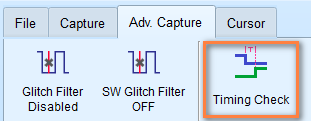
-
选择要使用的配置文件（.csv）。
- 选择要进入的模式：时序检查（Timing Check）或 H/W Strap。
- 设置完成后，点击开始（Start）按钮开始采集。
- 完成后，软件会分析结果并显示每项测量的 Pass/Fail 状态。
下方为时序检查报告的示例画面：
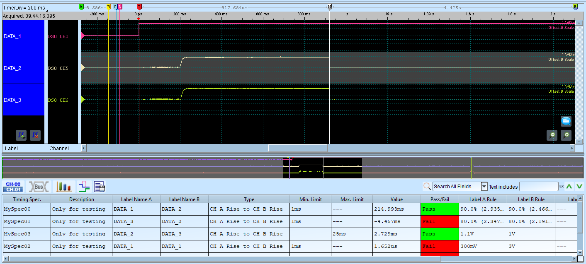
配置文件格式
以下说明如何构建配置文件。配置文件为 CSV 格式，由多个区段组成，各区段定义所需的采集设置。
配置文件格式要求
- 每个区段开头为字段名称
- 以逗号分隔数值
- 每个区段结尾以分号（;）结束
- 双斜线（//）后的注释会被忽略
有效格式示例：
1 2 3 | |
1 2 3 | |
若需要示例配置文件供参考，请联系我们：service@acute.com.tw。
设置速查表
SampleRate
输入采样率数值，单位：MHz、KHz、Hz。
示例：
1 2 3 | |
Note
可使用的最大采样率范围会受通道数量与触发类型影响。最小采样率不可低于 100 kHz。
若设置了 SampleRate，AnalogSampleRate 与 DigitalSampleRate 将会设为相同数值。
AnalogSampleRate
Note
此设置仅适用于混合信号示波器（Mixed-Signal Oscilloscope）系列。
输入模拟采样率数值，单位：MHz、KHz、Hz。
示例：
1 2 3 | |
DigitalSampleRate
输入数字采样率数值，单位：MHz、KHz、Hz。
示例：
1 2 3 | |
ChannelNumber
Note
此设置仅适用于 TravelLogic 系列。
Note
可用通道数量会依采样率以及是否启用/禁用过渡存储模式而有所不同。
指定要使用的通道数量。
| 采样率 | LA 非过渡模式 | LA 过渡模式 |
|---|---|---|
| 2 GHz | 0:3（4 通道） | 0:2（3 通道） |
| 1 GHz | 0:7（8 通道） | 0:5（6 通道） |
| 500 MHz | 0:15（16 通道） | 0:11（12 通道） |
| 250 MHz, 200MHz | 0:31（32 通道） | 0:23（24 通道） |
示例：
1 2 3 | |
RecordLength
设置录制内存深度。单位：MB、Mb。
最大录制内存深度依不同型号而异。数值不可低于 16 Mb。
示例：
1 2 3 | |
TransitionalMode
启用或禁用过渡存储模式。
设为 1 以启用过渡存储模式，0 以禁用。
示例：
1 2 3 | |
Note
使用混合信号示波器（Mixed-Signal Oscilloscope）系列的模拟通道时，此设置会被忽略。
Threshold
设置逻辑电平检测的电压阈值。单位：mV 或 V。
TravelLogic 系列的电压阈值范围为 ±5V。
混合信号示波器（Mixed-Signal Oscilloscope） 系列的电压阈值范围为 ±20V。
示例：
1 2 3 4 5 6 | |
Note
TravelLogic 系列启用施密特电路功能时，Channel 16-31 将变为次要参考阈值电压。混合信号示波器系列不受影响。
UseSchmittCircuit
TravelLogic 系列设为 1 以启用施密特电路功能，0 以禁用。这会影响电压电平参数的意义，且可用通道数上限将降至 16 通道。
混合信号示波器（Mixed-Signal Oscilloscope） 系列使用此参数启用硬件施密特电路迟滞功能，可用通道数不受影响。
示例：
1 2 3 | |
Hysteresis
Note
此参数仅适用于混合信号示波器（Mixed-Signal Oscilloscope）系列。
启用或禁用硬件施密特电路迟滞功能。设为 1 以启用，0 以禁用。
示例：
1 2 3 | |
Channel
通道设置及其属性。各字段定义如下：
- 通道选择：
CH0（数字通道 0）、CH(A)0（模拟通道 0） - 标签名称：最多 31 个英数字符
- 模式（选填）：TimingCheck、HwStrap 或 TimingCheck+HwStrap
| 模式 | 说明 |
|---|---|
| TimingCheck | 通道仅用于时序检查，在 H/W Strap 中隐藏 |
| HwStrap | 通道仅用于硬件 Strap，在时序检查中隐藏 |
| TimingCheck+HwStrap | 两种模式皆可用 |
- 预期最大电压（选填）：模拟通道使用，单位：mV、V
- 预期最小电压（选填）：模拟通道使用，单位：mV、V
示例（数字通道）：
1 2 3 4 5 | |
示例（模拟通道）：
1 2 3 4 5 6 7 8 | |
Tip
此区段可接受多行输入。
AnalogChannel
Note
此区段仅适用于混合信号示波器（Mixed-Signal Oscilloscope）系列。
设置模拟通道及其属性。各字段定义如下：
- 通道选择：
CH(A)0（模拟通道 0）。MSO3000 系列请使用DSO CH1表示模拟通道 1。 - 标签名称：最多 31 个英数字符
-
电压档位：
单位：V、mV
-
电压偏移：
单位：V、mV
-
（选填）探头衰减
Note
仅适用于 MSO3000 系列。
-
（选填）带宽限制：单位：FULL、20MHz、100MHz
Note
仅适用于 MSO3000 系列。
-
（选填）耦合：单位：DC、AC
Note
仅适用于 MSO3000 系列。
示例：
1 2 3 4 5 6 7 8 9 10 11 | |
Trigger
单行输入，定义触发条件。各字段定义如下：
- 触发通道标签：参照
Channel中定义的标签 -
触发类型：
CHANNEL_LOWCHANNEL_HIGHCHANNEL_ANYCHANNEL_RISINGCHANNEL_FALLINGCHANNEL_CHANGINGANALOG_CH_RISING（仅适用于混合信号示波器系列）ANALOG_CH_FALLING（仅适用于混合信号示波器系列）
-
模式（选填）：TimingCheck、HwStrap 或 TimingCheck+HwStrap
- 电压（选填）：模拟通道使用，单位：mV、V
示例：
MyData2 通道标签（对应 Channel 中的设置）在 HwStrap 模式下上升时触发
1 2 3 | |
MyData2 通道标签（对应 Channel 中的设置）在 TimingCheck 模式下上升时触发
1 2 3 | |
模拟通道上升（VCC (1.8V)）
1 2 3 4 | |
TriggerPosition
设置内存中的触发点位置。单位：%。
示例：
1 2 3 | |
RangeStart
使用游标参考设置测量起始位置。
可接受值：CursorA 至 CursorZ。
示例：
1 2 3 | |
RangeEnd
使用游标参考设置测量结束位置。
可接受值：CursorA 至 CursorZ。
示例：
1 2 3 | |
TimingCheck
多行输入，定义时序测量与规格。各字段定义如下：
- 规格名称：仅供显示
- 规格说明：仅供显示
- 目标 CH A：参照
Channel中定义的通道标签 - 目标 CH B：参照
Channel中定义的通道标签 -
时序检查类型：
CHA_RISE_TO_CHB_RISE：第一个 CH A 上升沿至第一个 CH B 上升沿
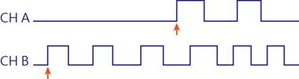
CHA_RISE_TO_CHB_FALL：第一个 CH A 上升沿至第一个 CH B 下降沿
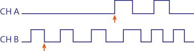
CHA_FALL_TO_CHB_RISE：第一个 CH A 下降沿至第一个 CH B 上升沿
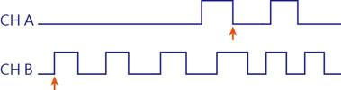
CHA_FALL_TO_CHB_FALL：第一个 CH A 下降沿至第一个 CH B 下降沿
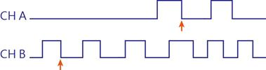
CHA_RISE_TO_NEXT_CHB_RISE：第一个 CH A 上升沿之后的下一个 CH B 上升沿
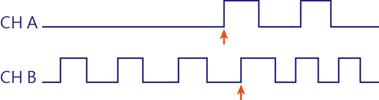
CHA_RISE_TO_NEXT_CHB_FALL：第一个 CH A 上升沿之后的下一个 CH B 下降沿
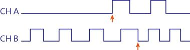
CHA_FALL_TO_NEXT_CHB_RISE：第一个 CH A 下降沿之后的下一个 CH B 上升沿
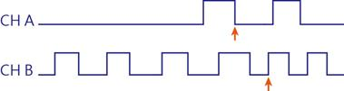
CHA_FALL_TO_NEXT_CHB_FALL：第一个 CH A 下降沿之后的下一个 CH B 下降沿
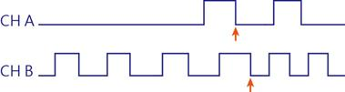
CHA_RISE_TO_PREV_CHB_RISE：第一个 CH A 上升沿至前一个 CH B 上升沿
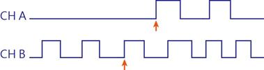
CHA_RISE_TO_PREV_CHB_FALL：第一个 CH A 上升沿至前一个 CH B 下降沿
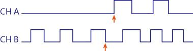
CHA_FALL_TO_PREV_CHB_RISE：第一个 CH A 下降沿至前一个 CH B 上升沿
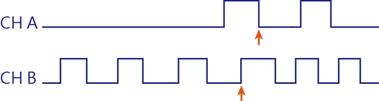
CHA_FALL_TO_PREV_CHB_FALL：第一个 CH A 下降沿至前一个 CH B 下降沿
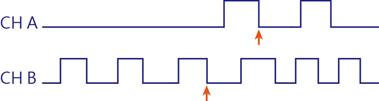
CHA_RISE_TO_FAREST_CHB_RISE
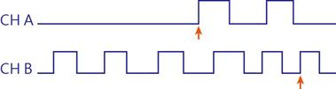
CHA_RISE_TO_FAREST_CHB_FALL
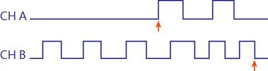
CHA_FALL_TO_FAREST_CHB_RISE
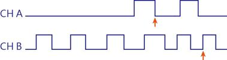
CHA_FALL_TO_FAREST_CHB_FALL
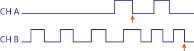
CHA_HIGH_TIMECHA_LOW_TIMECHA_HIGH_PULSE_COUNTCHA_LOW_PULSE_COUNTCHA_RISE_EDGE_COUNTCHA_FALL_EDGE_COUNTCHA_EDGE_COUNT
以下测量仅适用于混合信号示波器（Mixed-Signal Oscilloscope）系列。
CHA_SLEW_RATECHA_V_MAXCHA_V_MINCHA_V_PPCHA_V_HIGHCHA_V_LOWCHA_V_AMPLITUDECHA_V_MEANCHA_RISE_TIMECHA_FALL_TIME
-
下限：
时间测量单位：ns、us、ms、s
电压测量单位：mV、V
转换速率测量单位：mV/us、mV/ms、V/us、V/ms
X表示无限制。 -
上限：
时间测量单位：ns、us、ms、s
电压测量单位：mV、V
转换速率测量单位：mV/us、mV/ms、V/us、V/ms
X表示无限制。 -
（选填）CH A 参考电压
模拟通道使用，单位：mV、V
示例：90% 表示参考通道电压的 90%。
示例：1.5V 表示直接设置参考电压。
-
（选填）CH B 参考电压
模拟通道使用，单位：mV、V
示例：90% 表示参考通道电压的 90%。
示例：1.5V 表示直接设置参考电压。
-
（选填）CH A 通过次数
忽略条件符合的前 N 次。
-
（选填）CH B 通过次数
忽略条件符合的前 N 次。
示例：
1 2 3 4 5 | |
模拟通道示例（仅限混合信号示波器系列）
1 2 3 4 5 6 7 8 | |
HWStrap
单行输入，定义硬件 Strap 条件。各字段定义如下：
- 目标通道：
CH0（数字通道 0），仅供显示。 - 目标通道标签：参照
Channel中定义的标签 - 参考通道标签：参照
Channel中定义的标签 -
参考通道类型：
参考通道类型 CHANNEL_RISINGCHANNEL_FALLINGCHANNEL_CHANGING -
规格值：输入 0 或 1 作为预期值，结果不符预期时判定为失败。
-
CH A 参考电压：模拟通道使用
单位可为电压（mV、V）或百分比（%）。
示例：90% 表示参考通道电压的 90%。
示例：1.5V 表示直接设置参考电压。
-
CH B 参考电压：模拟通道使用
单位可为电压（mV、V）或百分比（%）。
示例：90% 表示参考通道电压的 90%。
示例：1.5V 表示直接设置参考电压。
-
CH A 通过次数：
忽略条件符合的前 N 次。
-
CH B 通过次数：输入 0 或 1 作为预期值。
忽略条件符合的前 N 次。
示例：
1 2 3 4 5 | |
模拟通道示例（仅限混合信号示波器系列）
[HwStrap] //Analog Channel (MSO series ONLY)
CH(A)1, VCC (1.8V), VDD (1.5V), CHANNEL_RISING, 1, 90%, 90%, 0, 0
;